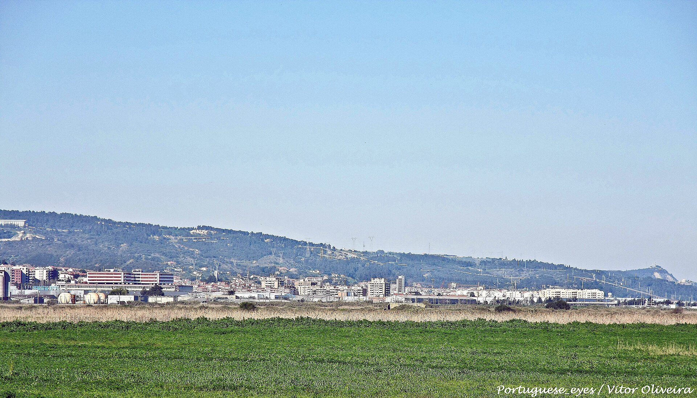
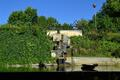
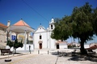
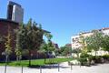
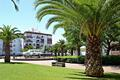
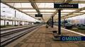
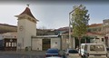
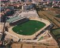
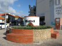

Alverca, berço da aviação em Portugal
Fotografia: Vitor Oliveira, CC BY-SA 2.0Fotografias








O aeródromo de Alverca, entre a cidade e o Tejo
Fotografia: Rehman Abubakr, CC BY-SA 4.0Vídeo
O Tejo, o rio que banha Alverca
Vídeo: Ijon, CC BY-SA 4.0Poesia
Às margens do Tejo, onde o rio se espalha,
Guarda Alverca a memória do vento e do ar,
Onde a asa de ferro na névoa trabalha,
E o horizonte convida a voar.
Ponte entre o rio e a faina do chão,
História escrita nas asas da aviação.